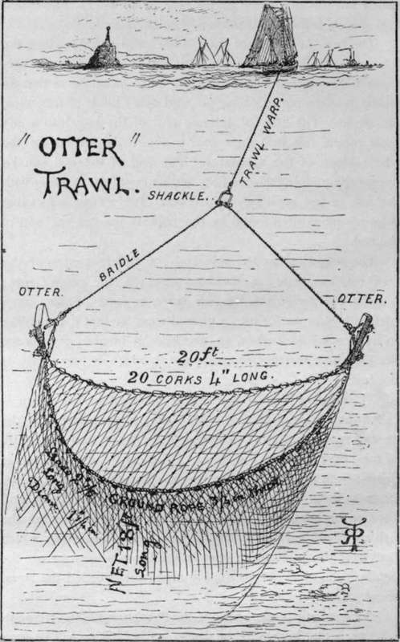
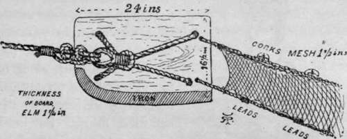
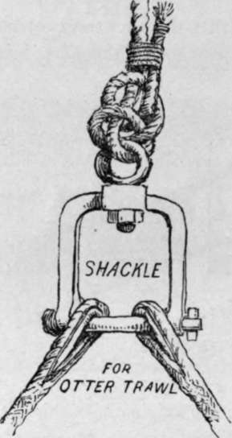

Sea Fishing From Yachts And Large Fishing Boats. Part 9
Description
This section is from the book "Sea Fishing", by John Bickerdyke. Also available from Amazon: Sea Fishing.
Sea Fishing From Yachts And Large Fishing Boats. Part 9
A clever apparatus, and one much more suitable for yacht-owners, is that known as the otter trawl, which, as will be seen from the illustration, has no beam. The mouth of the trawl in this case is kept open by means of two upright pieces of board, which are acted upon by the water in exactly the same way that the wind acts upon a kite and sends it up into the air. This will require no explanation to those who are familiar with the poaching instrument known as the otter board, which is, unfortunately, used on so many lakes in Scotland, Ireland, and Norway.
THE OTTER TRAWL.
I have sometimes seen it stated that the otter trawl catches more fish than the beam trawl, and instances of this have been quoted. Mr. Hearder claims to be the originator of this net ; but in Holdsworth's ' Deep Sea Fishing' a Mr. Musgrave is described as the inventor.
THE OTTER BOARD (FITTED).
The otter trawl has the disadvantage of not holding the ground well when there is a sea on ; but this drawback can be surmounted to some extent by heavily weighting the otter boards and by paying out a longer warp. The back of the net, instead of being supported by a beam, is floated by means of a number of corks ; and as it then takes a considerable curve, the fish which are under the back of the net are not so fully covered as they are in a beam trawl. This net is more suitable for flat fish than for round fish, which are inclined to swim upwards.
A yacht of ten tons could carry an otter trawl measuring about forty-two feet on the ground rope, and costing about 12 l. without the warp. A very long bridle ending with a shackle is required with this trawl. To avoid catching undersized fish, I think yachtsmen might set the example of having these nets made with a larger mesh than that ordinarily employed.
I must confess I shared the opinion, common among fishermen, that the size of the mesh, within reasonable limits, had no influence on the size of the fish captured, owing to the meshes being drawn close together by the strain on the net while fishing. But some recent experiments carried on by the directions of the Scotch Fishery Board have disillusioned me. They have proved beyond question that a comparatively small difference in the size of the mesh makes a very appreciable difference in the size of the fish captured.
The experiments were performed in the most thorough manner. A beam trawl of twenty-five feet was used, the cod of which had a mesh of one and a half inch from knot to knot. Surrounding the cod was a second net of small mesh measuring only half an inch from knot to knot. Thus, whatever escaped through the meshes of the trawl net would be caught in the outside surrounding net. The first trial was made with the ordinary cod mesh of one and a half inch from knot to knot, and it was found that not less than 74 per cent, of common dabs passed through the cod into the surrounding net. But it was very different with plaice : only 2.4 per cent, out of 2,772 captured escaped from the trawl. From this it is evident that in the ordinary trawl nets used by professional fishermen the great majority of small dabs escape, while most of the plaice, large and small, are retained. About twice as many codlings passed through the trawl net as were caught. About the same number of haddocks passed through as were caught ; and while 450 whiting were found in the cod, 8,000 were found in the outer net. The fish that escaped were, of course, small ones. The proportion between fish caught and fish passing through the meshes of the net would naturally depend on the grounds trawled over—that is to say, whether those grounds were mainly stocked with small fish or large ones.
Then followed an experiment made with a special cod-end having meshes of single twine of the same size as before ; after which came a trial of the trawl fitted with a cod-end having meshes of two inches from knot to knot, and, as in all cases, enclosed within a small meshed net. Six hauls were made with this net ; the cod or purse retaining in all 546 fish, while 2,426 passed through into the outer net. But here again the great majority of plaice were retained in the cod, it being the dabs, codling, and whiting, and a few hundred herrings, which went through into the outer net. One hundred and seventy-two plaice were caught, of which only three were in the surrounding net. Taking the fish as a whole, 18.3 per cent, were retained, while 81.6 per cent, passed through the two-inch mesh.
The next experiment was with a cod-end having a two and a half inch mesh from knot to knot; when it was found that 14.8 per cent, of the fish were caught in the cod-end, while 85.1 passed through into the net outside. Most of the plaice remained in the trawl, only four out of eighty-six escaping into the outer net.
The fifth experiment was with a cod-end having meshes of three inches from knot to knot ; when the trawl contained 62 per cent, of fish, and the outer net 93.7 per cent.
The total results may be summed up as follows : that an increased number of fish passed through the trawl-end as the meshes increased; the percentage rising from 66.3 with a one and a half inch mesh to 937 with a three-inch mesh ; but that, as the meshes increased, the proportion of round fish which escaped increased to a greater extent than the proportion of flat fish. This appears to explain the curious fact that where a great deal of trawling has been carried on, more injury has been done to flat fish than to round fish.
From these experiments we should expect to find the trawlers do greater injury to plaice than to any other variety of fish, and that unquestionably is the case if we leave soles out of consideration. For out of 3,348 plaice of various sizes caught in all the experiments, only 74, or a little over 2 per cent., escaped through the meshes of the trawl. The broad results of the experiments are that no regulation of mesh practicable for fishing purposes would save from capture anything like an appreciable proportion of the undersized and immature specimens of plaice (probably soles also) which enter the net. But, with regard to many other kinds of fish, the increase in the size of the mesh would appear to be an advantage to the fishing without any disadvantage to the fisherman. I therefore repeat my suggestion that yachtsmen should set the fishermen the example of using cod-ends to their trawls made with at least a three-inch mesh from knot to knot.
Continue to:
- prev: Sea Fishing From Yachts And Large Fishing Boats. Part 8
- Table of Contents
- next: Sea Fishing From Yachts And Large Fishing Boats. Part 10
Tags
fishing, hooks, bait, fishermen, spanish mackerel, mackerel fishing